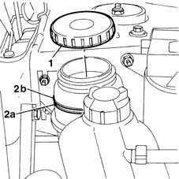

4130B14 Power assisted steering fluid reservoir CAP - R.R. - Check level and top up if necessary.
- Path
- Procedures > 41 STEERING > 4130 POWER ASSISTED STEERING > 4130B power steering hydraulic sytem > 4130B14 Power assisted steering fluid reservoir CAP - R.R. - Check level and top up if necessary.
- Kind
- repair procedure (removal / refitting; the operation number is the code)
- Applies to
- all engines; all production periods
- Interactive page
- https://sloeber94.github.io/elrnDB-fMltpl/en/#/2891690
Applies to: all engines; all production periods
 Removing
Removing
 Refitting
RefittingOpen the bonnet lid.
1. Undo the cap and remove it.
2. Check that the level of the fluid in the power assisted steering box is between the MIN (2a) and MAX (2b) reference marks.
If necessary, top up using suitable fluid until the MAX mark is reached.

Applies to: all engines; all production periods
Refitting
RemovingTighten the cap on the reservoir.
Close the bonnet lid.
Topics that link to this page (27)
- S45 NOISE' FRONT / ROUND BENDS
- 0010K20 20,000km service coupon, emission control version
- 0010K21 20,000km service for emission control versions with a/c
- 0010K40 40,000km service coupon, emission control versions
- 0010K48 40,000km service for emission control versions with a/c
- 0010K60 60,000km service coupon - emission control versions
- 0010K61 60000 service coupon, emission control version
- 0010K80 80,000km service coupon - emission control versions
- 0010K85 80,000km service for emission control versions with a/c
- 0010M01 100,000km service coupon, emission control versions
- 0010M08 1000,000km service for emission control versions with a/c
- 0010M20 120,000km service coupon, emission control versions
- 0010M21 120000 km service coupon for emission control versions with air conditioner
- 0010M40 140,000km service coupon - emission control versions
- 0010M41 140,000km service for emission control versions with a/c
- 0010M60 160,000km service coupon - emission control versions
- 0010M68 160,000km service for emission control versions with a/c
- 0010M80 180,000km service coupon - emission control versions
- 0010M81 180000 km service coupon foe emission control versions with air conditioner
- 4130A13 POWER ASSISTED STEERING BOX - R.R. - If necessary. check wheel toe in separately - Includes. bleeding air - on right hand drive versions
- 4130B10 power steering fluid resevoir r r
- 4130B20 power steering pump r r
- 4130B35 supply pipe from fluid resevior to power steering pump r r for right hand drive versions
- 4130B40 outlet pipe from pump to power steering case r r
- 4130B41 outlet pipe from pump to power steering case r r for right hand drive versions
- 4130B53 heat exchanger pipe - r r for rhd versions
- 4130B75 return pipe between power steering case and duplex pipes r r for right hand drive versions